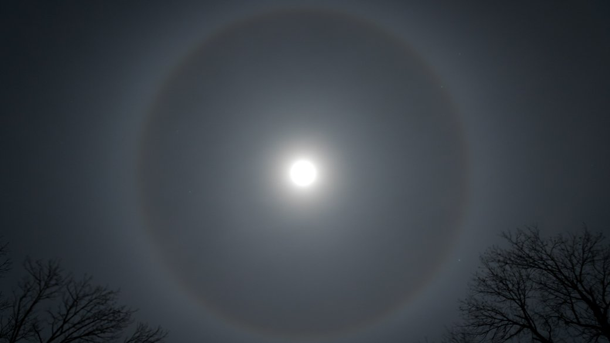

Cirrus
Specii
 Cirrus castellanus
Cirrus castellanus
 Cirrus fibratus
Cirrus flocus
Cirrus fibratus
Cirrus flocus
 Cirrus spissatus
Cirrus spissatus
 Cirrus uncinus
Cirrus uncinus
Varietati
Cirrus duplicatus intortus
Cirrus intortus
 Cirrus radiatus
Cirrus radiatus
 Cirrus vertebratus
Cirrus vertebratus
Cirrocumulus
Specii
 Cirrocumulus castellanus
Cirrocumulus floccus
Cirrocumulus castellanus
Cirrocumulus floccus
 Cirrocumulus lenticularis
Cirrocumulus lenticularis
 Cirrocumulus stratiformis
Cirrocumulus stratiformis
Varietati
Cirrocumulus lacunosus
 Cirrocumulus undulatus
Cirrocumulus undulatus
Cirrostratus
Specii
Cirrostratus fibratus

Cirrostratus nebulosus
Varietati
Cirrostratus duplicatus
 Cirrostratus undulatus
Cirrostratus undulatus
Altocumulus
Specii
Altocumulus castellanus
Altocumulus floccus
Altocumulus lenticularis
 Altocumulus stratiformis
Altocumulus stratiformis
Varietati
Altocumulus duplicatus
 Altocumulus lacunosus
Altocumulus opacus
Altocumulus perlucidus
Altocumulus lacunosus
Altocumulus opacus
Altocumulus perlucidus
 Altocumulus radiatus
Altocumulus radiatus
 Altocumulus translucidus
Altocumulus undulatus
Altocumulus translucidus
Altocumulus undulatus
Altostratus
Varietati
Altostratus translucidus
Altostratus opacus
Altostratus duplicatus
 Altostratus undulatus
Altostratus undulatus
 Altostratus radiatus
Altostratus radiatus
Stratocumulus
Specii
Stratocumulus castellanus
Stratocumulus lenticularis
Stratocumulus stratiformis
Varietati
 Stratocumulus perlucidus
Stratocumulus perlucidus
 Stratocumulus translucidus
Stratocumulus translucidus
 Stratocumulus opacus
Stratocumulus opacus
 Stratocumulus duplicatus
Stratocumulus radiatus
Stratocumulus lacunosus
Stratocumulus duplicatus
Stratocumulus radiatus
Stratocumulus lacunosus
Stratus
Specii
Stratus nebulosus
 Stratus fractus
Stratus fractus
Varietati
 Stratus opacus
Stratus translucidus
Stratus opacus
Stratus translucidus
 Stratus undulatus
Stratus undulatus
Nimbostratus
Particularitati
Nimbostratus praecipitatio
Nimbostratus virga
Nimbostratus pannus
Cumulus
Specii
Cumulus humilis
Cumulus mediocris
Cumulus congestus
 Cumulus fractus
Cumulus fractus
Varietati
Cumulus radiatus
Cumulonimbus
Specii
 Cumulonimbus calvus
Cumulonimbus capillatus
Cumulonimbus calvus
Cumulonimbus capillatus